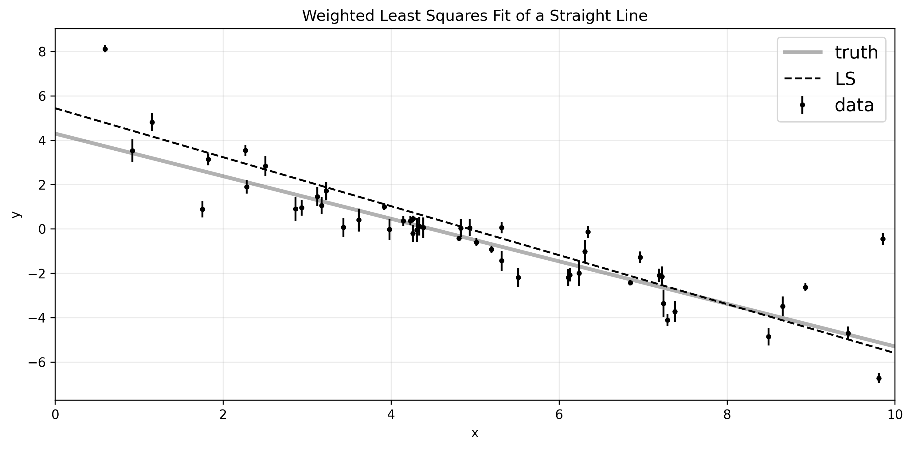
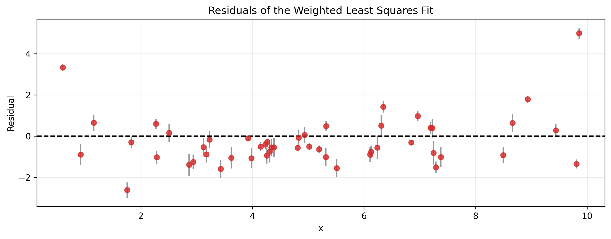
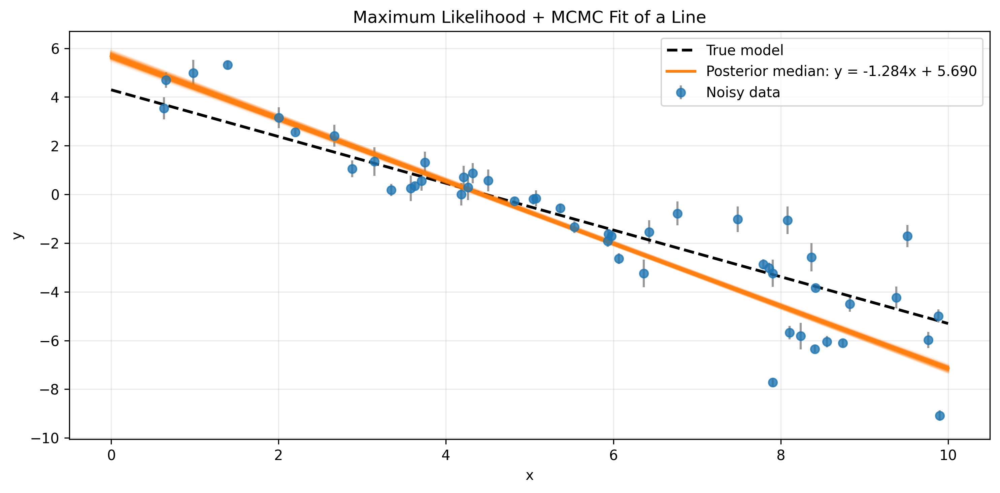
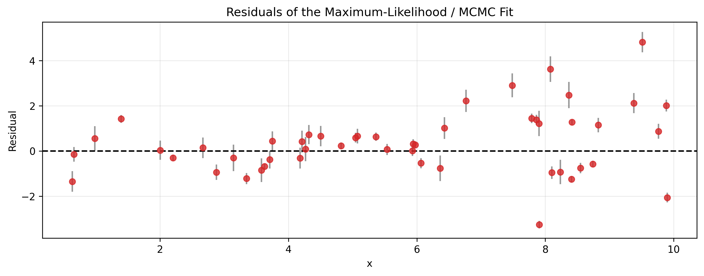
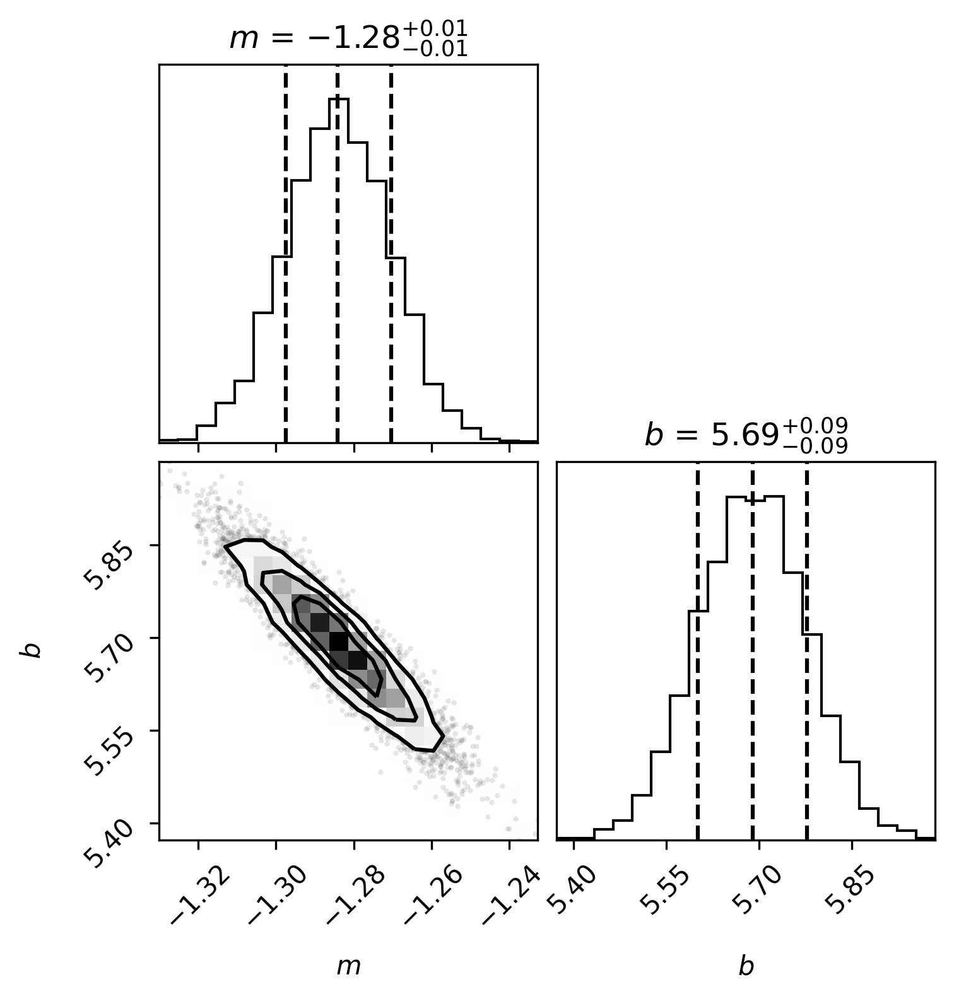

Computational-Physics
An undergraduate course I taught at Hebei Normal University (see: https://llyq17.github.io/Computational-Physics/README.html)
1. Introduction
Computational physics is the use of numerical methods, algorithms, and scientific computing to model, simulate, analyze, and interpret physical systems. It bridges mathematics, computer science, and physics, allowing us to study problems that are difficult or impossible to solve analytically. In practical research, computational physics is used to simulate motion, analyze experimental data, solve differential equations, and extract useful information from large datasets.
This lecture focuses on three core topics: interpolation, curve fitting, and Fourier analysis. They are fundamental tools in data analysis, numerical modeling, and scientific computing, and they appear repeatedly in physics experiments, signal processing, and simulations.
2. Why interpolation
Interpolation is a numerical technique used to estimate the value of a function at points that are not directly given by the data. In scientific computing and experimental physics, measurements are often available only at discrete sample points, while the underlying behavior is continuous. Interpolation provides a practical way to reconstruct a smooth curve between known values, which is useful for data analysis, visualization, and numerical simulation.
Interpolation is especially important because many physical quantities are observed only at selected positions or times. Instead of treating the data as a set of isolated points, we can use interpolation to obtain a reasonable approximation of the function between those points. Compared with direct measurement, interpolation is often more efficient and helps us understand the trend of the data.
2.1 Lagrange interpolation
Lagrange interpolation constructs a polynomial that passes through all given data points. For points $(x_0,y_0), (x_1,y_1), \dots, (x_n,y_n)$, the interpolation polynomial is written as a sum of basis polynomials:
This method is straightforward and is often used when the number of sample points is small. Its advantage is that the polynomial is guaranteed to pass through every given point. However, for large numbers of data points, the resulting polynomial may become unstable and oscillatory.
Code example: linear Lagrange interpolation for $\sin(x)$
Here is a simple Python example using linear Lagrange interpolation on the function $\sin(x)$.
import os
import numpy as np
import matplotlib.pyplot as plt
from scipy.interpolate import lagrange
# 如果 Figures 文件夹不存在，则自动创建
os.makedirs("Figures", exist_ok=True)
def linear_interpolation(x_nodes, y_nodes, x):
"""
一次拉格朗日插值，即分段线性插值。
对每个计算点，选取其所在区间的两个相邻节点，
再调用 scipy.interpolate.lagrange 构造一次多项式。
"""
y_linear = np.empty_like(x, dtype=float)
n_nodes = len(x_nodes)
for k, x_value in enumerate(x):
if x_value <= x_nodes[0]:
start = 0
elif x_value >= x_nodes[-1]:
start = n_nodes - 2
else:
right = np.searchsorted(x_nodes, x_value, side="right")
start = right - 1
polynomial = lagrange(
x_nodes[start:start + 2],
y_nodes[start:start + 2]
)
y_linear[k] = polynomial(x_value)
return y_linear
# 在区间 [0, 2π] 上构造 9 个等距插值节点
x_nodes = np.linspace(0.0, 2.0 * np.pi, 9)
y_nodes = np.sin(x_nodes)
# 构造致密网格，用于绘图和误差计算
x = np.linspace(0.0, 2.0 * np.pi, 2000)
y_true = np.sin(x)
# 一次拉格朗日插值
y_linear = linear_interpolation(x_nodes, y_nodes, x)
error_linear = np.abs(y_linear - y_true)
# 一次拉格朗日插值曲线
plt.figure(figsize=(10, 6))
plt.scatter(x_nodes, y_nodes, s=60, label="Nine data points", zorder=3)
plt.plot(x, y_linear, linewidth=2, label="Degree-1 Lagrange interpolation")
plt.plot(x, y_true, "--", linewidth=2, label="True function: sin(x)")
plt.xlabel("x")
plt.ylabel("f(x)")
plt.title("Piecewise Linear Lagrange Interpolation")
plt.grid(alpha=0.25)
plt.legend()
plt.tight_layout()
plt.savefig("Figures/linear_lagrange.png", dpi=300, bbox_inches="tight")
plt.show()
# 一次拉格朗日插值误差
plt.figure(figsize=(10, 6))
plt.plot(x, error_linear, "--", linewidth=2, label="Absolute error")
plt.xlabel("x")
plt.ylabel(r"$|P_1(x)-\sin(x)|$")
plt.title("Error of Piecewise Linear Lagrange Interpolation")
plt.grid(alpha=0.25)
plt.legend()
plt.tight_layout()
plt.savefig("Figures/linear_lagrange_error.png", dpi=300, bbox_inches="tight")
plt.show()The resulting plot is shown below:


The corresponding figure is stored in Figures/linear_lagrange.png and Figures/linear_lagrange_error.png.
Code example: quadratic Lagrange interpolation for $\sin(x)$
Here is a simple Python example using quadratic Lagrange interpolation on the function $\sin(x)$.
import os
import numpy as np
import matplotlib.pyplot as plt
from scipy.interpolate import lagrange
# 如果 Figures 文件夹不存在，则自动创建
os.makedirs("Figures", exist_ok=True)
def quadratic_interpolation(x_nodes, y_nodes, x):
"""
二次拉格朗日插值，即局部抛物线插值。
对每个计算点，选取附近的三个连续节点，
再调用 scipy.interpolate.lagrange 构造二次多项式。
"""
y_quadratic = np.empty_like(x, dtype=float)
n_nodes = len(x_nodes)
for k, x_value in enumerate(x):
nearest = int(np.argmin(np.abs(x_nodes - x_value)))
start = nearest - 1
start = max(start, 0)
start = min(start, n_nodes - 3)
polynomial = lagrange(
x_nodes[start:start + 3],
y_nodes[start:start + 3]
)
y_quadratic[k] = polynomial(x_value)
return y_quadratic
# 在区间 [0, 2π] 上构造 9 个等距插值节点
x_nodes = np.linspace(0.0, 2.0 * np.pi, 9)
y_nodes = np.sin(x_nodes)
# 构造致密网格，用于绘图和误差计算
x = np.linspace(0.0, 2.0 * np.pi, 2000)
y_true = np.sin(x)
# 二次拉格朗日插值
y_quadratic = quadratic_interpolation(x_nodes, y_nodes, x)
error_quadratic = np.abs(y_quadratic - y_true)
# 二次拉格朗日插值曲线
plt.figure(figsize=(10, 6))
plt.scatter(x_nodes, y_nodes, s=60, label="Nine data points", zorder=3)
plt.plot(x, y_quadratic, linewidth=2, label="Degree-2 Lagrange interpolation")
plt.plot(x, y_true, "--", linewidth=2, label="True function: sin(x)")
plt.xlabel("x")
plt.ylabel("f(x)")
plt.title("Local Quadratic Lagrange Interpolation")
plt.grid(alpha=0.25)
plt.legend()
plt.tight_layout()
plt.savefig("Figures/quadratic_lagrange.png", dpi=300, bbox_inches="tight")
plt.show()
# 二次拉格朗日插值误差
plt.figure(figsize=(10, 6))
plt.plot(x, error_quadratic, "--", linewidth=2, label="Absolute error")
plt.xlabel("x")
plt.ylabel(r"$|P_2(x)-\sin(x)|$")
plt.title("Error of Local Quadratic Lagrange Interpolation")
plt.grid(alpha=0.25)
plt.legend()
plt.tight_layout()
plt.savefig("Figures/quadratic_lagrange_error.png", dpi=300, bbox_inches="tight")
plt.show()The resulting plot is shown below:


The corresponding figure is stored in Figures/quadratic_lagrange.png and Figures/quadratic_lagrange_error.png.
Code example: Lagrange interpolation for $\sin(x)$
Here is a simple Python example using Lagrange interpolation on the function $\sin(x)$.
import os
import numpy as np
import matplotlib.pyplot as plt
from scipy.interpolate import lagrange
# 如果 Figures 文件夹不存在，则自动创建
os.makedirs("Figures", exist_ok=True)
# 在区间 [0, 2π] 上构造 9 个等距插值节点
x_nodes = np.linspace(0.0, 2.0 * np.pi, 9)
y_nodes = np.sin(x_nodes)
# 构造致密网格，用于绘图和误差计算
x = np.linspace(0.0, 2.0 * np.pi, 2000)
y_true = np.sin(x)
# 八次全局拉格朗日插值
polynomial_degree8 = lagrange(x_nodes, y_nodes)
y_degree8 = polynomial_degree8(x)
error_degree8 = np.abs(y_degree8 - y_true)
# 八次全局拉格朗日插值曲线
plt.figure(figsize=(10, 6))
plt.scatter(x_nodes, y_nodes, s=60, label="Nine data points", zorder=3)
plt.plot(x, y_degree8, linewidth=2, label="Degree-8 Lagrange interpolation")
plt.plot(x, y_true, "--", linewidth=2, label="True function: sin(x)")
plt.xlabel("x")
plt.ylabel("f(x)")
plt.title("Degree-8 Global Lagrange Interpolation")
plt.grid(alpha=0.25)
plt.legend()
plt.tight_layout()
plt.savefig("Figures/degree8_lagrange.png", dpi=300, bbox_inches="tight")
plt.show()
# 八次全局拉格朗日插值误差
plt.figure(figsize=(10, 6))
plt.plot(x, error_degree8, "--", linewidth=2, label="Absolute error")
plt.xlabel("x")
plt.ylabel(r"$|P_8(x)-\sin(x)|$")
plt.title("Error of Degree-8 Global Lagrange Interpolation")
plt.grid(alpha=0.25)
plt.legend()
plt.tight_layout()
plt.savefig("Figures/degree8_lagrange_error.png", dpi=300, bbox_inches="tight")
plt.show()The resulting plot is shown below:


The corresponding figure is stored in Figures/degree8_lagrange.png and Figures/degree8_lagrange_error.png.
The notebook Code/lagrange_interpolation.ipynb also compares several approaches.


2.2 Newton interpolation
Newton interpolation is another polynomial interpolation method. It expresses the interpolation polynomial in a form based on finite differences, making it convenient for adding new data points incrementally. In general, the Newton form can be written as:
where the coefficients $a_k$ are determined by divided differences:
and similarly for higher orders. This formulation is especially useful because when a new data point is added, only the new divided differences are needed, so the interpolation polynomial can be updated efficiently.
Code example: Newton interpolation for $\sin(x)$
Here is a simple Python example using Newton interpolation on the function $\sin(x)$.
import os
import numpy as np
import matplotlib.pyplot as plt
# 如果 Figures 文件夹不存在，则自动创建
os.makedirs("Figures", exist_ok=True)
def divided_difference(x_nodes, y_nodes):
"""
计算牛顿插值的差商表和差商系数。
返回：
table 完整差商表
coefficients 牛顿插值多项式的系数
"""
x_nodes = np.asarray(x_nodes, dtype=float)
y_nodes = np.asarray(y_nodes, dtype=float)
n = len(x_nodes)
table = np.zeros((n, n), dtype=float)
table[:, 0] = y_nodes
for j in range(1, n):
for i in range(n - j):
table[i, j] = (
table[i + 1, j - 1] - table[i, j - 1]
) / (
x_nodes[i + j] - x_nodes[i]
)
coefficients = table[0, :].copy()
return table, coefficients
def newton_interpolation(x_nodes, coefficients, x):
x_nodes = np.asarray(x_nodes, dtype=float)
coefficients = np.asarray(coefficients, dtype=float)
x = np.asarray(x, dtype=float)
y = np.full_like(x, coefficients[-1], dtype=float)
for k in range(len(coefficients) - 2, -1, -1):
y = coefficients[k] + (x - x_nodes[k]) * y
return y
x_nodes = np.linspace(0.0, 2.0 * np.pi, 9)
y_nodes = np.sin(x_nodes)
x = np.linspace(0.0, 2.0 * np.pi, 2000)
y_true = np.sin(x)
difference_table, coefficients = divided_difference(x_nodes, y_nodes)
y_newton = newton_interpolation(x_nodes, coefficients, x)
error_newton = np.abs(y_newton - y_true)
plt.figure(figsize=(10, 6))
plt.scatter(x_nodes, y_nodes, s=60, label="Nine data points", zorder=3)
plt.plot(x, y_newton, linewidth=2, label="Newton interpolation")
plt.plot(x, y_true, "--", linewidth=2, label="True function: sin(x)")
plt.xlabel("x")
plt.ylabel("f(x)")
plt.title("Newton Interpolation of sin(x)")
plt.grid(alpha=0.25)
plt.legend()
plt.tight_layout()
plt.savefig("Figures/newton_interpolation.png", dpi=300, bbox_inches="tight")
plt.show()
plt.figure(figsize=(10, 6))
plt.plot(x, error_newton, "--", linewidth=2, label="Absolute error")
plt.xlabel("x")
plt.ylabel(r"$|P_8(x)-\sin(x)|$")
plt.title("Absolute Error of Newton Interpolation")
plt.grid(alpha=0.25)
plt.legend()
plt.tight_layout()
plt.savefig("Figures/newton_interpolation_error.png", dpi=300, bbox_inches="tight")
plt.show()

The corresponding figure is stored in Figures/newton_interpolation.png and Figures/newton_interpolation_error.png.
2.3 Cubic spline interpolation
Cubic spline interpolation is a piecewise polynomial method in which the interval between neighboring data points is represented by a cubic polynomial. On each subinterval $[x_i,x_{i+1}]$, one writes
where $a_i,b_i,c_i,d_i$ are coefficients determined by the interpolation conditions. The spline is constructed so that the function values, first derivatives, and second derivatives are continuous at the knots:
This produces a smooth curve and avoids the large oscillations that may appear in high-degree polynomial interpolation. Because of its smoothness and stability, cubic spline interpolation is widely used in engineering, computer graphics, and scientific data fitting. It is often preferred when a visually smooth and physically reasonable curve is needed.
Code example: Cubic spline interpolation for $\sin(x)$
Here is a simple Python example using Cubic spline interpolation on the function $\sin(x)$.
import os
import numpy as np
import matplotlib.pyplot as plt
from scipy.interpolate import CubicSpline
# 如果 Figures 文件夹不存在，则自动创建
os.makedirs("Figures", exist_ok=True)
x_nodes = np.linspace(0.0, 2.0 * np.pi, 9)
y_nodes = np.sin(x_nodes)
x = np.linspace(0.0, 2.0 * np.pi, 2000)
y_true = np.sin(x)
spline = CubicSpline(x_nodes, y_nodes, bc_type="natural")
y_spline = spline(x)
error_spline = np.abs(y_spline - y_true)
plt.figure(figsize=(10, 6))
plt.scatter(x_nodes, y_nodes, s=60, label="Nine data points", zorder=3)
plt.plot(x, y_spline, linewidth=2, label="Natural cubic spline interpolation")
plt.plot(x, y_true, "--", linewidth=2, label="True function: sin(x)")
plt.xlabel("x")
plt.ylabel("f(x)")
plt.title("Natural Cubic Spline Interpolation of sin(x)")
plt.grid(alpha=0.25)
plt.legend()
plt.tight_layout()
plt.savefig("Figures/cubic_spline_interpolation.png", dpi=300, bbox_inches="tight")
plt.show()
plt.figure(figsize=(10, 6))
plt.plot(x, error_spline, "--", linewidth=2, label="Absolute error")
plt.xlabel("x")
plt.ylabel(r"$|S(x)-\sin(x)|$")
plt.title("Absolute Error of Natural Cubic Spline Interpolation")
plt.grid(alpha=0.25)
plt.legend()
plt.tight_layout()
plt.savefig("Figures/cubic_spline_interpolation_error.png", dpi=300, bbox_inches="tight")
plt.show()

The corresponding figure is stored in Figures/cubic_spline_interpolation.png and Figures/cubic_spline_interpolation_error.png.
2.4 Runge's phenomenon
A classic warning about high-degree polynomial interpolation is Runge's phenomenon. If we interpolate the function
using many equally spaced nodes, the interpolating polynomial may oscillate strongly near the endpoints. This shows that increasing the degree of the polynomial does not always improve the approximation.
The notebook Code/runge_interpolation_comparison.ipynb compares several approaches:
The resulting comparison figure is stored in Figures/Runge_comparison.png.

This example illustrates why piecewise and spline-based methods are often more stable than one single high-degree polynomial.
3. Why curve fitting
Curve fitting is the process of choosing a mathematical model and its parameters so that the model describes observed data as well as possible. In physics and experimental science, measurements are rarely exact; they contain noise, limited precision, and possible systematic effects. Curve fitting helps us recover the underlying trend and estimate the parameters of a physical model.
Curve fitting is important because it allows us to turn raw experimental data into useful quantitative information. Instead of merely connecting points, we aim to infer a model that can explain the data, predict new values, and reveal the relationships between variables.
3.1 Least squares
Least squares is one of the most common methods for fitting a model to data. It chooses the parameters that minimize the sum of squared residuals. Weighted least squares generalizes ordinary least squares by incorporating the uncertainty of each measurement. It chooses the parameters that minimize the weighted sum of squared residuals,
where $y_i$ are observed values, $f(x_i;\theta)$ are model predictions, $\sigma_i$ are the standard uncertainties of the measurements, and $\theta$ denotes the unknown parameters. This formulation is preferable when different data points have different uncertainties because it gives less influence to noisy or low-quality measurements.
Equivalently, in matrix form,
with $\mathbf{W} = \mathrm{diag}(1/\sigma_1^2, \ldots, 1/\sigma_n^2)$.
The example below follows the same line-fitting idea described in the emcee tutorial: fit a straight line to noisy measurements with known uncertainties and estimate the slope and intercept by minimizing the weighted squared residuals.
Code example: least squares fit of a straight line
Here is a simple Python example using least squares to fit a line to noisy data.
import os
import numpy as np
import matplotlib.pyplot as plt
os.makedirs("Figures", exist_ok=True)
np.random.seed(123)
m_true = -0.9594
b_true = 4.294
f_true = 0.534
N = 50
x = np.sort(10 * np.random.rand(N))
yerr = 0.1 + 0.5 * np.random.rand(N)
y = m_true * x + b_true
y += np.abs(f_true * y) * np.random.randn(N)
y += yerr * np.random.randn(N)
x0 = np.linspace(0, 10, 500)
A = np.vander(x, 2)
C = np.diag(yerr * yerr)
ATA = np.dot(A.T, A / (yerr**2)[:, None])
cov = np.linalg.inv(ATA)
w = np.linalg.solve(ATA, np.dot(A.T, y / yerr**2))
plt.figure(figsize=(10, 5))
plt.errorbar(x, y, yerr=yerr, fmt=".k", capsize=0, label="data")
plt.plot(x0, m_true * x0 + b_true, "k", alpha=0.3, lw=3, label="truth")
plt.plot(x0, np.dot(np.vander(x0, 2), w), "--k", label="LS")
plt.legend(fontsize=14)
plt.xlim(0, 10)
plt.xlabel("x")
plt.ylabel("y")
plt.title("Weighted Least Squares Fit of a Straight Line")
plt.grid(alpha=0.25)
plt.tight_layout()
plt.savefig("Figures/least_squares_fit.png", dpi=300, bbox_inches="tight")
plt.figure(figsize=(10, 4))
residuals = y - np.dot(np.vander(x, 2), w)
plt.errorbar(x, residuals, yerr=yerr, fmt="o", color="tab:red", ecolor="tab:gray", alpha=0.8)
plt.axhline(0.0, color="black", linewidth=1.5, linestyle="--")
plt.xlabel("x")
plt.ylabel("Residual")
plt.title("Residuals of the Weighted Least Squares Fit")
plt.grid(alpha=0.25)
plt.tight_layout()
plt.savefig("Figures/least_squares_residuals.png", dpi=300, bbox_inches="tight")
plt.show()The resulting plots are shown below:


The corresponding figures are stored in Figures/least_squares_fit.png and Figures/least_squares_residuals.png.
{kind=link}
{kind=link}
The notebook Code/least_square.ipynb provides the same example in executable notebook form.
3.2 Maximum likelihood
Maximum likelihood estimation treats the data as random outcomes generated by a probability model. The parameters are chosen to maximize the likelihood of observing the data that were actually measured. In many cases, if the errors are assumed to be Gaussian, maximum likelihood leads to the same optimization problem as least squares, up to constant factors.
The likelihood function is written as
and the maximum-likelihood estimate is obtained by finding
The following example uses the same noisy line-fitting problem but estimates the posterior distribution with emcee, following the standard approach in the emcee tutorial.
Code example: maximum likelihood fit using emcee
Here is a simple Python example using maximum likelihood and MCMC to fit a line to noisy data.
import os
import numpy as np
import matplotlib.pyplot as plt
import emcee
import corner
from scipy.optimize import minimize
m_true = -0.9594
b_true = 4.294
f_true = 0.534
N = 50
x = np.sort(10 * np.random.rand(N))
yerr = 0.1 + 0.5 * np.random.rand(N)
y = m_true * x + b_true
y += np.abs(f_true * y) * np.random.randn(N)
y += yerr * np.random.randn(N)
def log_likelihood(theta, x, y, yerr):
m, b = theta
model = m * x + b
return -0.5 * np.sum(((y - model) / yerr) ** 2 + np.log(2.0 * np.pi * yerr ** 2))
def log_prior(theta):
m, b = theta
if -5.0 < m < 0.5 and 0.0 < b < 10.0:
return 0.0
return -np.inf
def log_probability(theta, x, y, yerr):
lp = log_prior(theta)
if not np.isfinite(lp):
return -np.inf
return lp + log_likelihood(theta, x, y, yerr)
nll = lambda *args: -log_likelihood(*args)
initial = np.array([m_true, b_true]) + 0.1 * rng.normal(size=2)
soln = minimize(nll, initial, args=(x, y, yerr))
m_ml, b_ml = soln.x
ndim = 2
nwalkers = 32
nsteps = 3000
initial = np.array([m_ml, b_ml]) + 1e-4 * rng.normal(size=(nwalkers, ndim))
sampler = emcee.EnsembleSampler(nwalkers, ndim, log_probability, args=(x, y, yerr))
sampler.run_mcmc(initial, nsteps, progress=False)
samples = sampler.get_chain(discard=100, thin=15, flat=True)
m_samples = samples[:, 0]
b_samples = samples[:, 1]
fig = corner.corner(samples, labels=[r"$m$", r"$b$"], truths=[m_true, b_true], quantiles=[0.16, 0.5, 0.84], show_titles=True)
fig.savefig("Figures/maximum_likelihood_corner.png", dpi=300, bbox_inches="tight")
plt.figure(figsize=(10, 5))
plt.errorbar(x, y, yerr=yerr, fmt="o", color="tab:blue", ecolor="tab:gray", alpha=0.8, label="Noisy data")
plt.plot(true_x, m_true * true_x + b_true, "--", color="black", linewidth=2, label="True model")
for m, b in samples[np.random.choice(len(samples), 200, replace=False)]:
plt.plot(true_x, m * true_x + b, color="tab:orange", alpha=0.05)
plt.plot(true_x, np.median(m_samples) * true_x + np.median(b_samples), color="tab:orange", linewidth=2,
label=f"Posterior median: y = {np.median(m_samples):.3f}x + {np.median(b_samples):.3f}")
plt.xlabel("x")
plt.ylabel("y")
plt.title("Maximum Likelihood + MCMC Fit of a Line")
plt.grid(alpha=0.25)
plt.legend()
plt.tight_layout()
plt.savefig("Figures/maximum_likelihood_fit.png", dpi=300, bbox_inches="tight")
plt.figure(figsize=(10, 4))
residuals = y - (np.median(m_samples) * x + np.median(b_samples))
plt.errorbar(x, residuals, yerr=yerr, fmt="o", color="tab:red", ecolor="tab:gray", alpha=0.8)
plt.axhline(0.0, color="black", linewidth=1.5, linestyle="--")
plt.xlabel("x")
plt.ylabel("Residual")
plt.title("Residuals of the Maximum-Likelihood / MCMC Fit")
plt.grid(alpha=0.25)
plt.tight_layout()
plt.savefig("Figures/maximum_likelihood_residuals.png", dpi=300, bbox_inches="tight")
plt.show()The resulting plots are shown below:



The corresponding figures are stored in Figures/maximum_likelihood_fit.png and Figures/maximum_likelihood_residuals.png.
{kind=link}
{kind=link}
The notebook Code/maximum_likelihood.ipynb provides the same example in executable notebook form.
4. Why FFT
Fourier analysis is one of the most powerful tools in computational physics because many physical phenomena are naturally described in frequency space. Signals, oscillations, and wave patterns can be more easily analyzed by decomposing them into sinusoidal components. In this part of the lecture, we introduce the discrete Fourier transform and the fast Fourier transform, which are essential for spectral analysis, filtering, and numerical simulations.
4.1 Discrete Fourier transform (DFT)
The discrete Fourier transform converts a sequence of sampled data values into a set of frequency-domain coefficients. For a signal $x_0,x_1,\dots,x_{N-1}$, the DFT is defined as
This representation shows how the original data can be expressed as a superposition of harmonic components with different frequencies. In computational physics, the DFT is widely used in spectral analysis, solving partial differential equations, and studying vibrations, waves, and periodic phenomena.
4.2 Fast Fourier Transform (FFT)
The fast Fourier transform is an efficient algorithm for computing the DFT. Instead of requiring $O(N^2)$ operations for a length-$N$ sequence, the FFT reduces the computational cost to approximately $O(N\log N)$. This dramatic improvement makes large-scale spectral analysis practical in scientific computing and engineering.
The FFT is used in signal processing, image analysis, time-series analysis, and many simulation techniques in physics. It allows us to move quickly between the time domain and frequency domain, making it possible to identify dominant frequencies, filter noise, and interpret oscillatory behavior.